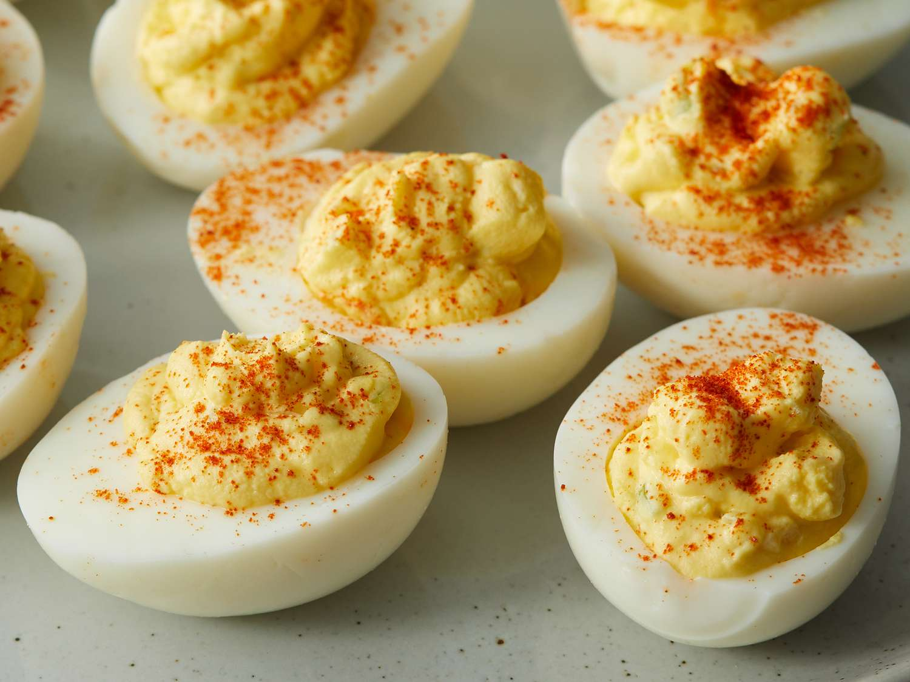

Deviled Eggs

Description
Deviled eggs, also known as stuffed eggs, curried eggs or dressed eggs,
are hard-boiled eggs that have been peeled, cut in half, and
filled with the yolk, mixed with other ingredients such as
mayonnaise and mustard. They are generally served cold as a side dish,
appetizer, or a main course during gatherings or parties.
The dish's origin can be seen in recipes for boiled, seasoned eggs as
far back as ancient Rome, where they were traditionally served
as a first course. The dish is popular in Europe, North America and Australia.
Ingredients
- 6 eggs
- 1/4 cup mayonnaise
- 1 teaspoon white vinegar
- 1 teaspoon yellow mustard
- 1/8 teaspoon salt
- Freshly ground black pepper
- Smoked paprika, for garnish
Steps
- Place eggs in a single layer in a saucepan and cover with enough water that there's 1 1/2 inches of water above the eggs. Heat on high until water begins to boil, then cover, turn the heat to low, and cook for 1 minute. Remove from heat and leave covered for 14 minutes, then rinse under cold water continuously for 1 minute.
- Crack egg shells and carefully peel under cool running water. Gently dry with paper towels. Slice the eggs in half lengthwise, removing yolks to a medium bowl, and placing the whites on a serving platter. Mash the yolks into a fine crumble using a fork. Add mayonnaise, vinegar, mustard, salt, and pepper, and mix well.
- Evenly disperse heaping teaspoons of the yolk mixture into the egg whites. Sprinkle with paprika and serve.